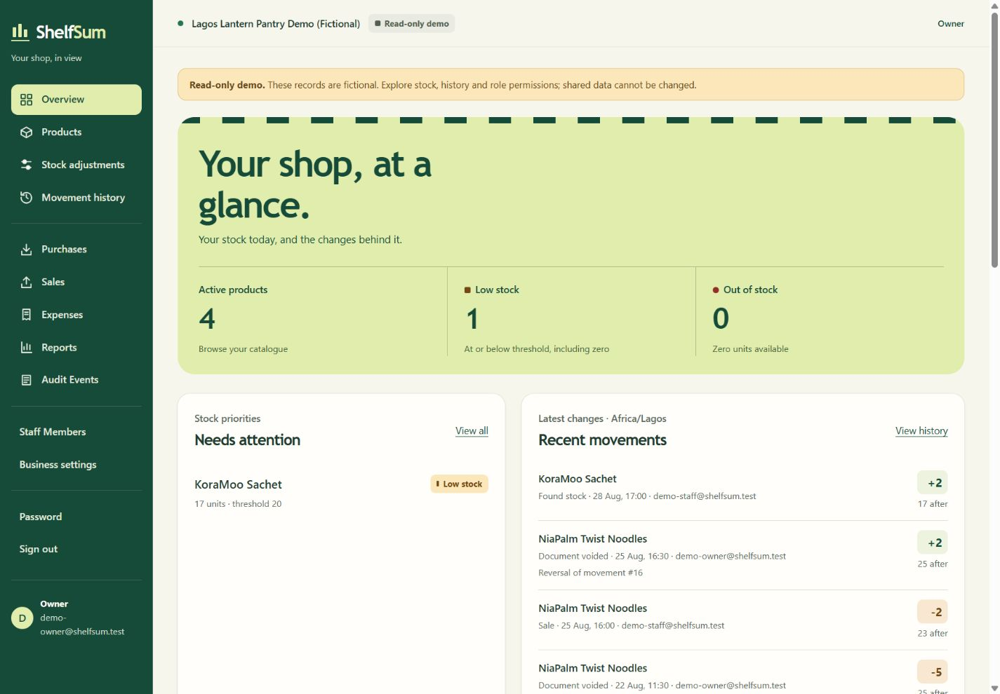

Featured Project
ShelfSum
Explainable inventory and business activity for small shops.
A complete inventory workflow for small shops, from the owner dashboard to the stock ledger. Purchases, sales, and corrections remain traceable through transactional services and append-only movements. The public read-only demo uses fictional data; the verified release passed 288 automated tests against PostgreSQL.
Key Capabilities
- Role-based Owner and Staff permissions with tenant data isolation.
- Append-only stock movements and transactional reversals instead of model signals.
- Filtered ledger reports, explainable dashboard totals, and safe CSV exports.
Python 3.13 • Django 5.2 LTS • PostgreSQL • Render • Neon • GitHub Actions
Demo note: The free demo may take a moment to start after inactivity.
Owner:
demo-owner@shelfsum.test / ShelfSumDemoOwner2026!
Staff: demo-staff@shelfsum.test / ShelfSumDemoStaff2026!